From a gene pair
to a population.
A button-by-button, illustrated walkthrough using Kim 2010 bladder cancer Overall. Learn the left scientific tools first, the central workspace next, then sample groups, population analyses and reports.
Landing page → Kim 2010
HEGEMON means Hierarchical Exploration of Gene Expression Microarrays Online. It lets you inspect processed expression measurements, find gene relationships, define sample populations and compare their expression or survival. These analyses support research hypotheses; they do not establish causation or provide patient-specific clinical advice.
This is the portable, offline manual. Screenshots and example downloads are included. Open your running Hegemon website separately to perform the steps.
- Open the updated Hegemon website. Under Types of Studies, find Bladder cancer and click View. “Find a study type” filters category names, not genes.
- In Select Dataset, choose Kim 2010 bladder cancer Overall (n = 256). Check the registry ID
B2.1in Dataset information; other bladder studies are different datasets. - The source button GSE13507 ↗ opens the study’s GEO page. Source links are generated from the configured
sourcefield. Selecting a dataset shows metadata first: an empty scatterplot at this stage is correct. - Keep Gene A = TYROBP and Gene B = FCER1G. Click each Find probes button. Choose
ILMN_1778977for A andILMN_1785493for B. - Click Explore expression. You should now see TYROBP on X, FCER1G on Y and 256 paired samples. Keep this default pair for every group and report example unless instructed otherwise.
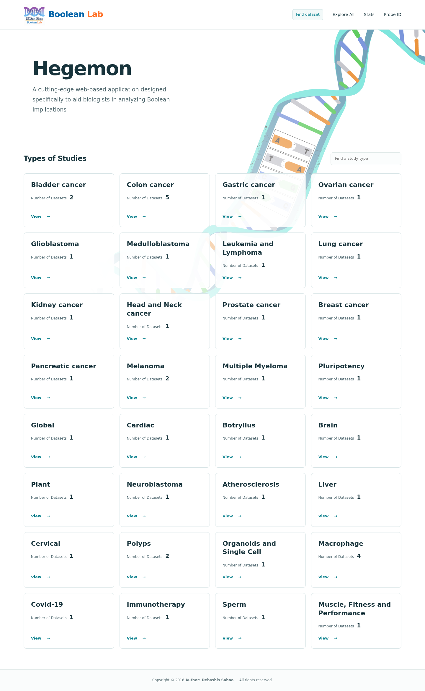
| Landing control | Action and result |
|---|---|
| Boolean Lab logo | Returns to the landing page. Save groups before leaving the workspace. |
| Find dataset | Search GSE13507, B2.1 or Kim; choose the matching study. Filters include category and Available on this server. Clear the search to show more studies; × or Escape closes the dialog. |
| Legacy link in Find dataset | Paste a Hegemon link containing key, id, A and B. Select its result to prefill the dataset and genes. You still click Explore expression; groups and zoom are not contained in that link. |
| Explore All | Opens the workspace across the server’s registered catalogue rather than one category. |
| Stats | Opens a separate calculator for pasted lists. It is not the selected dataset’s statistics. See section 9. |
| Probe ID | Opens the workspace in the Get IDs workflow. Select a dataset and enter a gene or probe; IDs are study/platform-specific. |
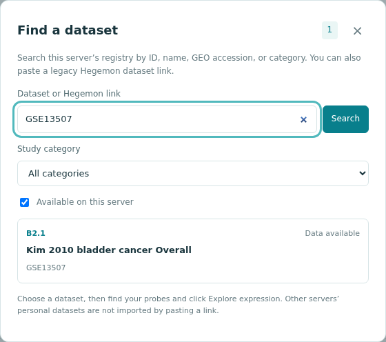
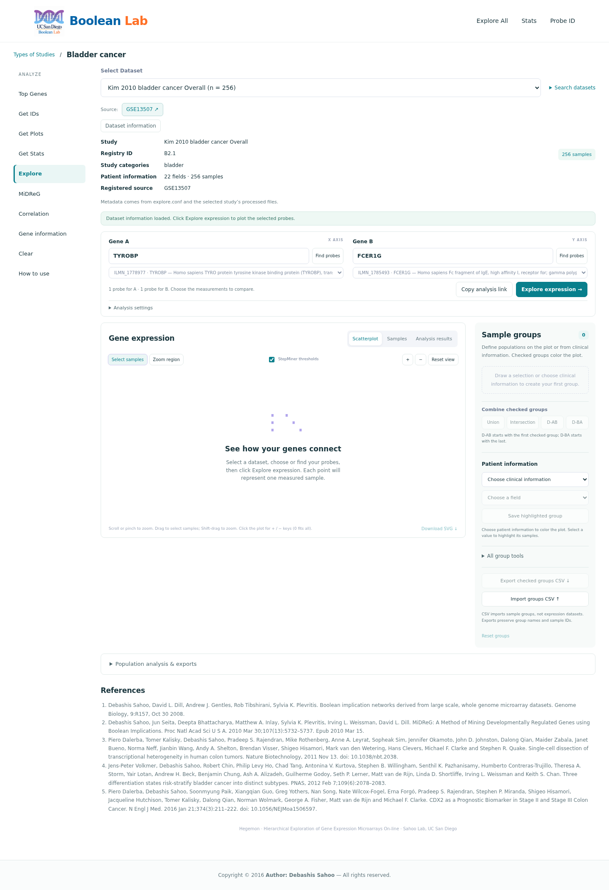
How to follow the guide: use Clear, confirm the default probes, then Explore expression whenever an example says “restore the Kim default pair.” Reset view is enough when the correct pair is already plotted. Export groups before either reset if you need them later.
The main scientific buttons
Choose Kim first. These tools open in the middle Analysis results tab. Unless stated otherwise, use A = TYROBP and B = FCER1G. These are dataset-level tools: checking a sample group does not turn their scans into a subset analysis.
Top Genes
- Expand Analysis settings; leave Number of genes = 10.
- Click Top Genes on the left.
- Inspect the returned probe IDs and annotations. The legacy ranking uses dynamic range and variability, not simply highest mean expression or a comparison of your groups.
- To inspect one, copy its probe ID into a gene field, click Find probes and Explore expression.
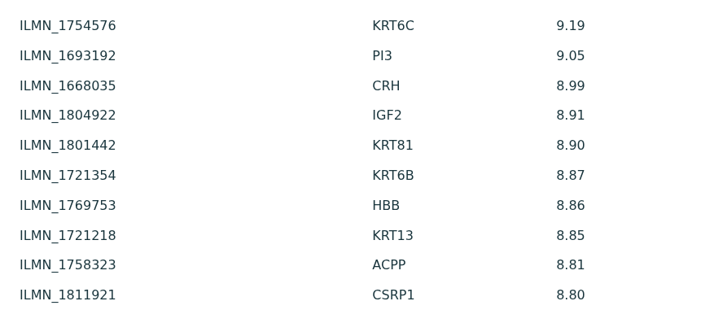
Get IDs
- Enter
TYROBPandFCER1G, then click Get IDs. - Read the matching IDs and gene labels. Expect TYROBP →
ILMN_1778977and FCER1G →ILMN_1785493for this dataset. Use the main probe selectors for the full annotations. - For a list, enter space-separated symbols such as
TYROBP FCER1G. The legacy best matching ID is shown in bold. Select the intended feature; multiple probes can measure different transcripts or regions.
Get Plots
- Restore the two default gene inputs; click Get Plots.
- A large static plot appears for each resolved A/B probe pair. Putting
TYROBP FCER1Gin both fields produces four pair combinations, including self-pairs. - Choose PNG, JPG, PDF or SVG in the figure format selector, then Download figure.
- Click Use in Explore to load that exact pair in the interactive main scatterplot. Get Plots itself does not provide interactive brushing.
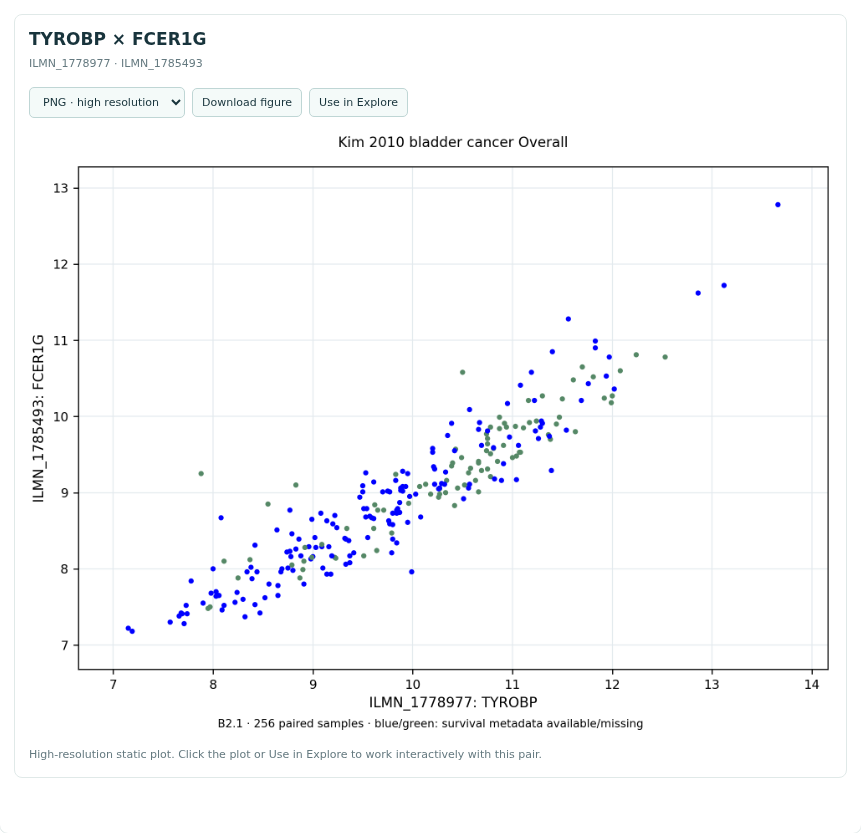
Get Stats
- Use the default pair and click Get Stats.
- Inspect the interactive figure and the Boolean/correlation statistics below it. Wheel zoom or drag a zoom rectangle; the statistics still describe the full dataset.
- For this pair the displayed Pearson correlation is about 0.931. A high positive correlation means co-variation, not proof that one gene regulates the other.
- Use Use in Explore before defining populations for this pair. See all figure-card controls.
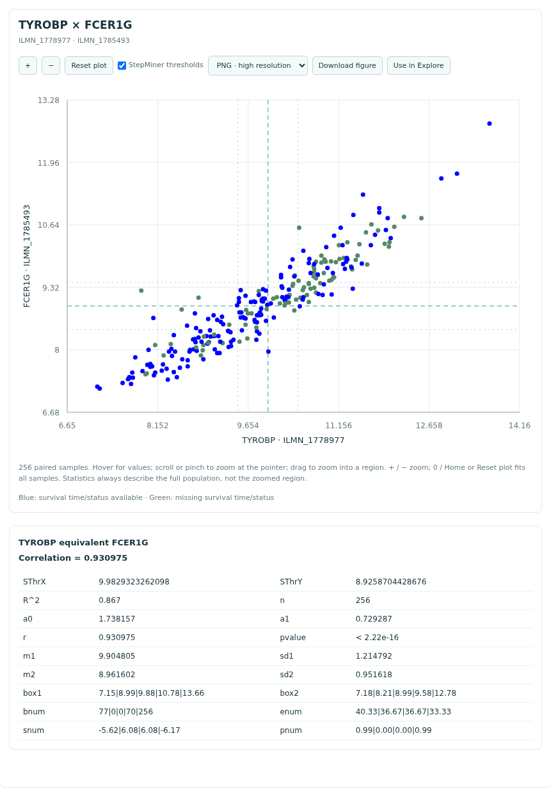
| Statistic label | Meaning |
|---|---|
| SThrX / SThrY | Expression thresholds for X/Y, about 9.983 / 8.926 here. They are not the Analysis settings SThr = 3. |
| r, R², n | Pearson correlation, linear fit R-squared and paired observations. The adjacent correlation p-value is not the Boolean PThr setting. |
| a0 / a1 | Fitted line intercept / slope. |
| m1 / m2; sd1 / sd2; box1 / box2 | Per-axis means, standard deviations and box-summary values. |
| bnum / enum | Observed / expected Boolean quadrant counts. The observed display also carries its legacy total. |
| snum / pnum | Legacy sparse-quadrant scores / error scores. These are not adjusted differential-expression p-values. |
Explore
Click Explore on the left, or the main Explore expression button, to load the resolved pair into the Scatterplot tab. This is the place for sample rectangles, patient highlights and group creation. Changing text alone does not update a previously loaded plot.
MiDReG
- Enter
TYROBPin Gene A and empty Gene B. Leave SThr = 3 and PThr = 0.1. - Click MiDReG. The cards count matching probes by Boolean relationship, not unique genes.
- Click Low → High. In the captured Kim run it contains 51 probes. Select ILVBL / ILMN_1759419 to reproduce the illustrated pair.
- Use Filter matching probes to search this category by symbol/ID. Copy probe IDs copies the currently filtered matches; use Ctrl/Cmd+C on the offered text if the browser disallows clipboard access.
- Inspect the interactive pair and its statistics, then use Use in Explore if you want to select samples for it. Restore the default TYROBP/FCER1G pair before continuing the Kim group exercises.
Resolved query probes expands the matched query IDs. Zero-count relationship cards are unavailable. No detected relationship is count-only in this legacy response; it is not an error and does not provide a probe list.
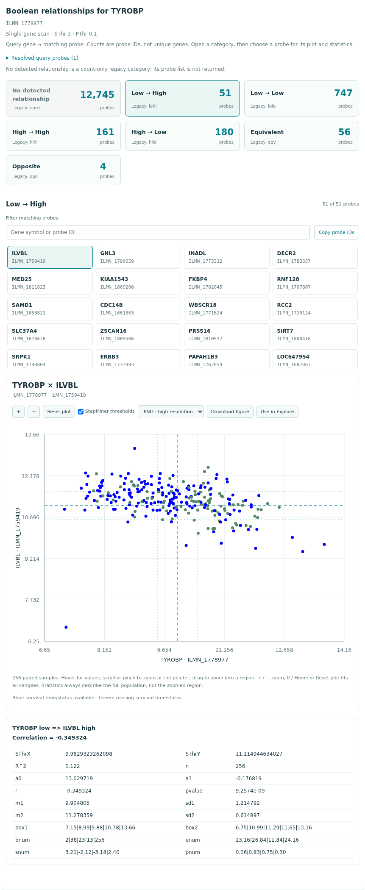
| Relationship | What is uncommon in the A/X, B/Y plot? |
|---|---|
| Low → High | A low with B low: lower-left quadrant is sparse. |
| Low → Low | A low with B high: upper-left quadrant is sparse. |
| High → High | A high with B low: lower-right quadrant is sparse. |
| High → Low | A high with B high: upper-right quadrant is sparse. |
| Equivalent | The off-diagonal low/high and high/low quadrants are sparse. |
| Opposite | The diagonal low/low and high/high quadrants are sparse. |
A Boolean implication is a population pattern, not a causal rule. Samples within each threshold’s ±0.5 uncertainty band are excluded from the Boolean quadrant scoring. Zooming does not recalculate the relationship on the visible region.
Correlation
- Use A =
TYROBP, leave B empty and click Correlation. - Choose a populated coefficient-bin card. Positive coefficients indicate expression rising together; negative coefficients indicate opposite trends.
- Filter the matching probes and select one to see its interactive pair/statistics. Copy probe IDs, Resolved query probes, Download figure and Use in Explore work as in MiDReG.
- This scans the full dataset. Use right-side Group correlation to restrict the scan to checked populations.
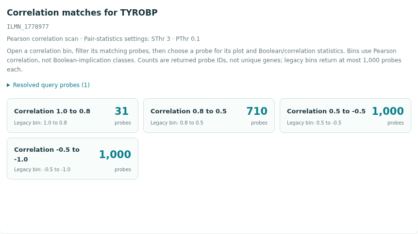
Gene information
- Restore the default inputs and click Gene information.
- Read the resolved probes’ dynamic range, minimum, mean, StepMiner threshold, maximum and standard deviation.
- Use this to inspect expression variability and scale. It is a numerical expression summary, not a gene-function encyclopedia.
Clear / How to use
Clear retains the selected study, restores TYROBP and FCER1G, and removes the current plot, groups and results. Resolve probes if needed, then click Explore expression again. Refresh also returns to an unplotted state and does not restore unsaved groups.
How to use opens this guide in a new tab so the active workspace stays intact. Close the guide tab to return to your analysis.
Dataset, genes and settings
| Control | How to use it / expected result |
|---|---|
| Select Dataset | Choose Kim B2.1. A different study clears study-specific groups and results. A dataset must be selected before gene lookups can succeed. |
| Search datasets | Expands the local Study library. Enter B2.1 or GSE13507 and click Search, then choose the study card. Choose All categories to search beyond bladder. This is an alternative to the dropdown, not another expression analysis. |
| Dataset information | Expands study name, ID, category keys, clinical-field availability and source. Kim has 22 patient-information fields in this build. |
| Source / GSE13507 | Opens the original dataset resource in another tab. External URLs configured in the registry are offered as links too. |
| Types of Studies / Explore All | Return to the landing categories / open the wider workspace. Export groups before navigating away. |
Gene A, Gene B and probe choices
- Gene A becomes X; Gene B becomes Y. Enter a supported symbol or exact probe ID.
- Click that field’s Find probes. The selector below lists matching features and annotations. Choose the one you intend to measure; a symbol is not always one-to-one with a probe.
- Click Explore expression after changes. Its pair title confirms what is loaded. Population tools use this loaded pair, not unsubmitted text.
- Copy analysis link copies a reproducible dataset-and-gene URL, including category context. If clipboard access is blocked, copy from the displayed link field. It prefills a new workspace but does not auto-plot or restore groups, zoom or clinical highlights.
Analysis settings
| Setting | Meaning and example |
|---|---|
| Number of genes | Controls the Top Genes list length. Start with 10. |
| SThr | Sparse-quadrant score cutoff; default 3. Higher is stricter. It does not move the expression threshold lines. |
| PThr | Legacy Boolean error/sparsity-score cutoff; default 0.1. Lower is stricter. It is not a conventional survival p-value or an FDR threshold. |
| CT | Optional survival censor time, synchronized with Censor time below. For Kim use 60 for 60 months, or 60,120 for censoring at 60 and a display maximum of 120. Leave empty for the original follow-up. |
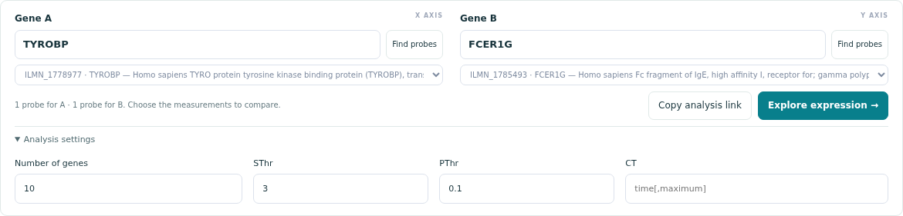
Read and control the scatterplot
Restore the default Kim pair. Each point is a sample with both expression values, not a gene. Hover to see the sample ID and measured X/Y values. The scale comes from the processed expression matrix; it is not automatically raw counts, a percentage or a clinical score.
| Appearance | Meaning in this Kim example |
|---|---|
| Blue · 165 | Usable survival time and status exist. Blue does not mean “dead,” “tumor” or high expression. |
| Green · 91 | No eligible time/status pair for this endpoint. Expression can still be analyzed. |
| Orange + dark outline | First newly created main-workspace group, while checked. Members are larger and outlined. Other groups can have other colors. |
| Small faded gray | Outside the union of checked groups. They are background samples, not deleted records. |
| Patient-information colors | When a clinical field is active, its legend controls fill colors. Group outlines still indicate membership; clear that field to see each group’s own color. |
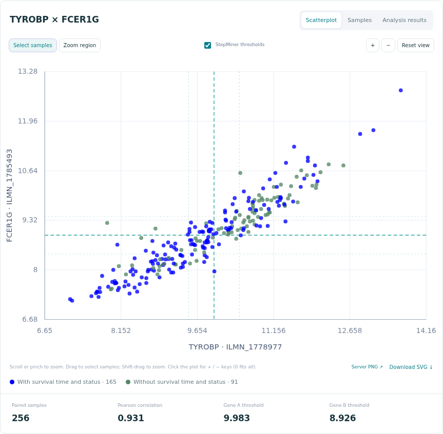
Every plot control
| Control / gesture | Try this | Expected result |
|---|---|---|
| Select samples | Click, then drag a rectangle over points. | A saved, checked group appears on the right. Its count depends on the rectangle; use Numeric rectangle for exact bounds. |
| Zoom region | Click, then drag a rectangle. | Magnifies that region without creating a group. |
| Wheel / trackpad; + / − | Scroll over a point, or use toolbar buttons. | Zooms; sample membership and statistics do not change. |
| Shift-drag | Hold Shift while drawing a rectangle. | Temporarily zooms, even in Select samples mode. |
| Alt / Option-drag | Hold Alt (Option on Mac) and drag. | Pans the visible expression range. |
| Keyboard / keypad | Focus the plot with Tab or a click; use + / − and arrow keys. | Zoom / pan. 0 or Home fits all samples without deleting groups. Escape cancels an in-progress drag. |
| StepMiner thresholds | Uncheck and recheck. | Hides/shows the central cut lines and ±0.5 uncertainty boundaries. It does not change thresholds or expression. |
| Reset view | Export wanted groups, then click. | Clears all groups, clinical highlights, checked sample rows and zoom; keeps the study and loaded pair. |
| Server PNG | Open in another tab. | Full-range server figure for the loaded pair’s default population. It does not track later brushing, zoom or group colors. |
| Download SVG | Click after setting the desired view. | Saves the current interactive scatter view, including current zoom and point styling. |
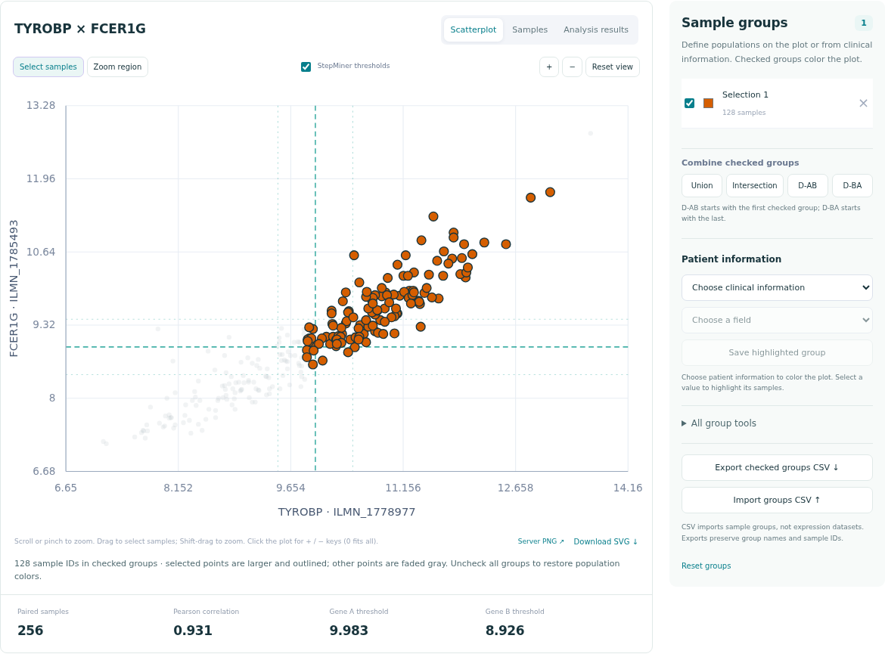
Controls inside scientific result cards
Get Stats and the MiDReG/Correlation drill-downs have their own interactive charts. Their wheel, +/−, keyboard fit and pan controls work like the main chart, but dragging a card zooms; it does not create a population.
| Card control | Effect |
|---|---|
| Reset plot | Fits the card’s data range only. It does not clear the workspace’s groups. |
| StepMiner thresholds | Toggles that card’s threshold guides. |
| Format selector + Download figure | Choose PNG / JPG / PDF / SVG, then download that pair’s figure. This is not the multi-part population PDF report. Check the exported axes; do not assume a server-rendered format is a screenshot of a browser zoom. |
| Use in Explore | Loads the card’s exact probes in the main workspace, where you can create sample groups. The pair used by population tools must be explicitly loaded there. |
Samples and Analysis results tabs
- Click Reset view, then the Samples tab.
- In Find sample, type
GSM340537and check its row. Change the search toGSM340538and check that row too. - Click Create group from checked rows. Expect a two-member group. Row selections can persist while filtering; the header checkbox checks the currently visible rows.
- Clear the search to see more rows. This text filter searches IDs/clinical values; filtering alone is not a saved population.
- Export selected union CSV downloads the unique union of checked saved groups, or all samples when no group is checked. It is not defined by unsaved row checkmarks or the current text filter.
- Analysis results shows left-tool and right-tool outputs. Click Scatterplot to return without clearing the loaded pair.
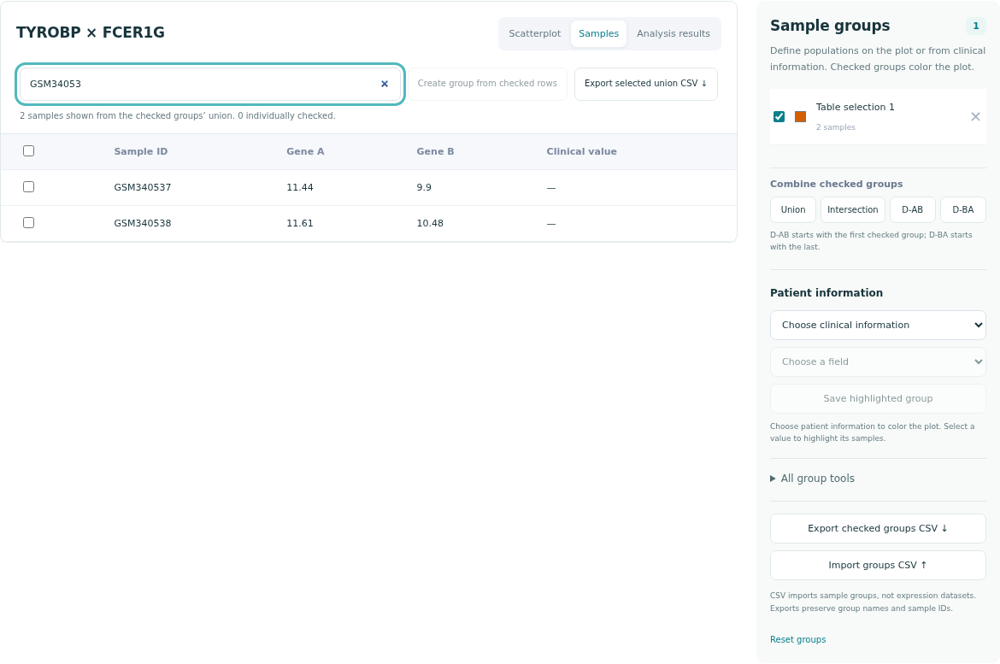
Sample groups: create and keep populations
A group is a named set of sample IDs. It is not a new dataset, a new gene or a permanent change to the lab’s files. Checked groups drive point focus and population analyses. An unchecked group is saved in the current page but inactive.
Build the two populations used for reports
- Restore the Kim default pair, or click Reset view if it is already loaded.
- Under Patient information, choose c invasiveness, then value 1. The legend and plot update interactively. Clicking a legend value is another way to choose it.
- Click Save highlighted group. Rename its editable name to
Inv1and press Tab to apply. Expect 103 samples. - Choose invasiveness value 2, save it and rename it
Inv2. Expect 62 samples. - Clear the clinical-field selection to see group colors instead of patient-information colors. Check only Inv1 and Inv2.
Checkpoint: two non-overlapping groups, 103 + 62 = 165 unique members; the other 91 samples fade gray. In this Kim file these 165 all have eligible overall-survival records.
“1” and “2” are stored clinical codes. This guide deliberately calls them Inv1/Inv2 rather than assigning clinical meanings that require the original study’s coding documentation. Merely highlighting a field/value does not save a group or change the configured survival endpoint.
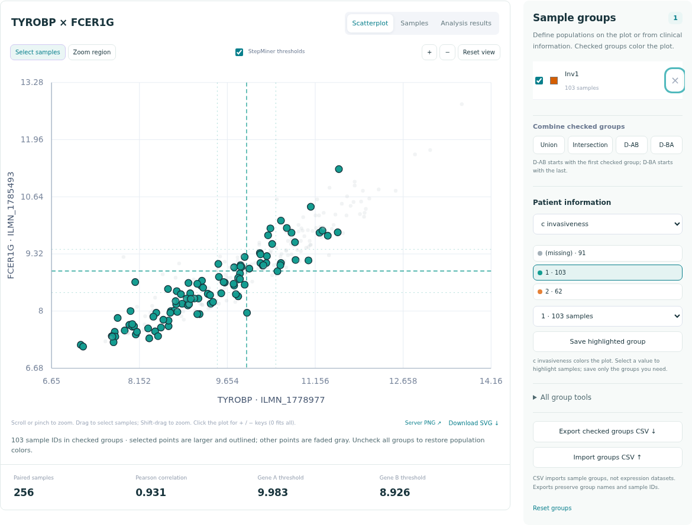
Every group-row control
| Control | Try this with Inv1 / Inv2 | What to expect |
|---|---|---|
| Checkbox | Uncheck Inv2, then recheck it. | Only Inv1 is active while Inv2 is unchecked; neither membership is deleted. With no checked groups and no clinical field, default blue/green colors return. |
| Color swatch | Choose a contrasting color for Inv2. | The plot and future output legends use that color. Clear the clinical field if it is overriding fill colors. |
| Editable group name | Change Inv1’s label, press Tab, then restore Inv1. | Only the label changes; membership stays 103. Short clear names make plots and reports easier to read. |
| Count / panel badge | Read each row and the badge. | Rows count members. The badge counts saved groups, including unchecked ones. Overlap means row counts must not simply be added. |
| × beside a row | Create a temporary group, then remove it. | Deletes only that saved group; it never deletes samples from the expression matrix. |
| Reset groups | Export your CSV first, then click. | Deletes all checked and unchecked groups, but preserves the loaded pair, clinical view and zoom. Rebuild or import groups afterward. |
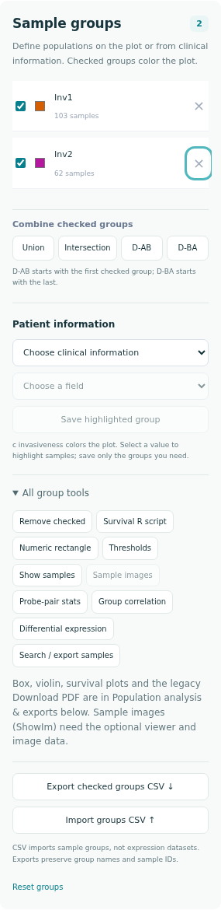
Create an inclusive age range
- Reset view; choose n AGE in Patient information.
- Enter
60:70in Numeric range (inclusive). - Click Create range group. Expect 67 samples, including the endpoints.
- For comparison,
0:200produces 165, not 256: samples without a numeric age are excluded. Do not interpret missing values as zero.
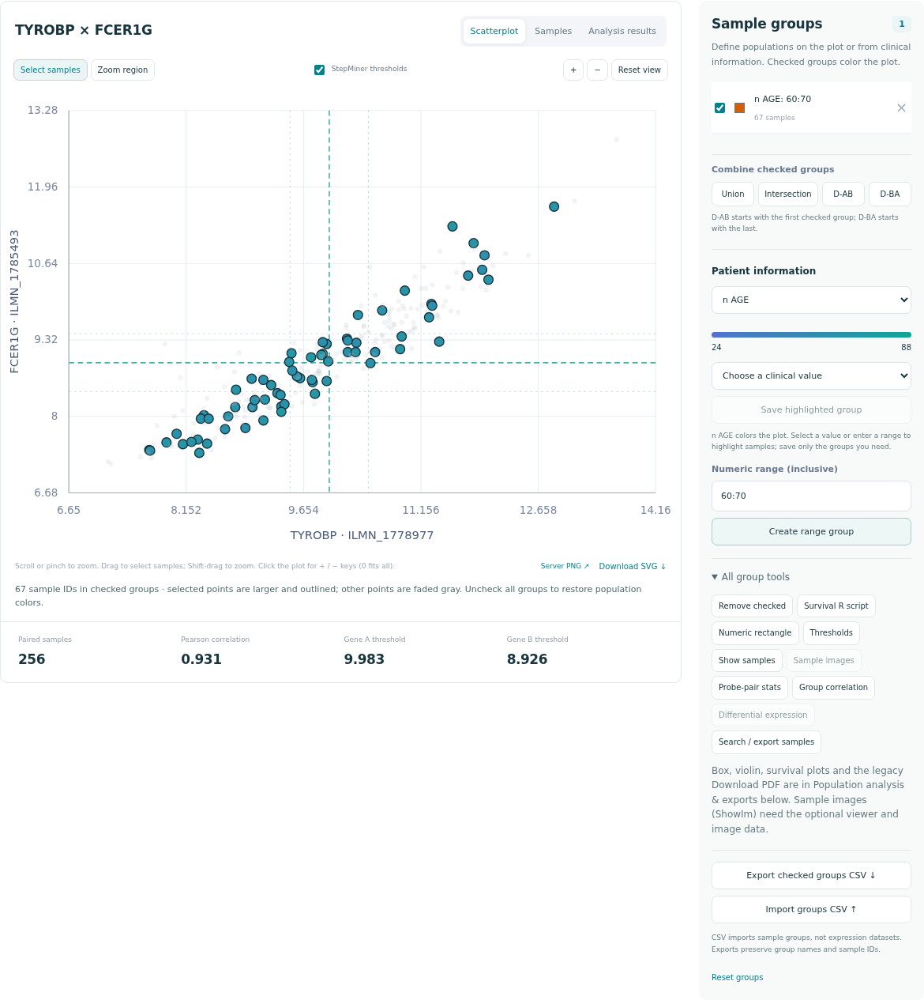
Union, Intersection, D-AB and D-BA
Use overlapping groups here to see the difference between all four operations. These G1/G2 groups are a separate exercise from Inv1/Inv2.
- Reset view. Save c invasiveness = 1 as the first group
G1: 103 members. - Save c Grade = 1 as the second group
G2: 105 members. Clear the clinical field. - Check only G1 and G2 and click each operation below. Each operation adds a checked result group; uncheck that new group before testing the next operation.
| Button | Meaning | Expected members |
|---|---|---|
| Union | In G1 or G2, counting each sample once. | 122 |
| Intersection | In both G1 and G2. | 86 |
| D-AB | In the first checked group G1, absent from G2. | 17 |
| D-BA | In the last checked group G2, absent from G1. | 19 |
Check just one derived group and click Show samples to inspect its IDs. “A/B” here means group-list order, not Gene A/Gene B. With more than two checked groups, Intersection keeps members common to all; D-AB subtracts all other checked groups from the first; D-BA subtracts all others from the last.
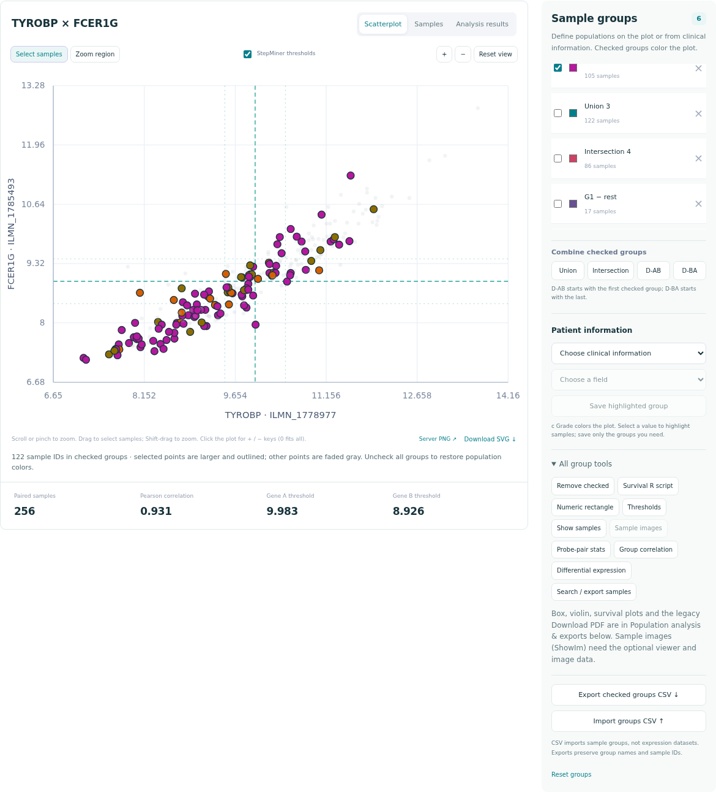
Export, import and migrate groups
- Reset view and rebuild the disjoint Inv1 / Inv2 groups from above. Check both.
- Click Export checked groups CSV. Save the downloaded file. For these cohorts expect 165 membership rows plus the header.
- Click Reset groups, then Import groups CSV and choose that file. With B2.1 still selected, expect Inv1 = 103 and Inv2 = 62 to return, including their names and colors.
- To continue in another session/job: open B2.1, load the intended pair, then import the CSV. Keep a copied analysis link alongside it to preserve the exact gene/probe setup.
Save before leaving: a browser refresh, Clear, Reset view or a dataset switch discards unsaved groups. CSV imports groups, not expression datasets. A different dataset ID is rejected; unknown sample IDs are skipped. Overlapping groups can repeat a sample in multiple CSV rows. Re-exploring a different pair within B2.1 retains ID membership—it does not reselect points using the new coordinates.
All group tools
Expand All group tools. Load a gene pair first. Disabled controls can mean missing prerequisites rather than a server error. Tool outputs normally appear in the middle Analysis results tab; Show samples opens Samples instead.
Remove checked
- Create three temporary groups. Uncheck the one you want to retain.
- Click Remove checked. Only the unchecked group remains.
- This deletes saved selections, not expression records. Reset groups differs: it removes every group, checked or not.
Numeric rectangle · legacy Rect1
- Restore the Kim default pair and reset groups.
- Click Numeric rectangle. Enter
10:12,9:11in its input, then GO. - Expect a new 102-member group: X between 10 and 12, Y between 9 and 11, inclusive.
- Check its right-panel checkbox if initially unchecked. Return to Scatterplot to see members outlined. Its legacy color may differ from the first orange brush group.
10:12,limits only X;,9:11limits only Y. These are expression values, not pixels, ages or zoom limits.
Thresholds · legacy Thr
- Click Thresholds with the default pair loaded.
- The field is
Xminimum:Xthreshold:Xmaximum,Yminimum:Ythreshold:Ymaximum. Its Kim defaults round to about7.2:10.0:13.7,7.2:8.9:12.8. - Click GO to see a diagnostic preview. Change a central threshold, then GO again to move its diagnostic line.
- The preview does not overwrite the processed threshold file, change the main plot’s stored thresholds or redefine existing group membership. Use Plot link if shown to open the generated diagnostic image; Image link opens the original pair image.
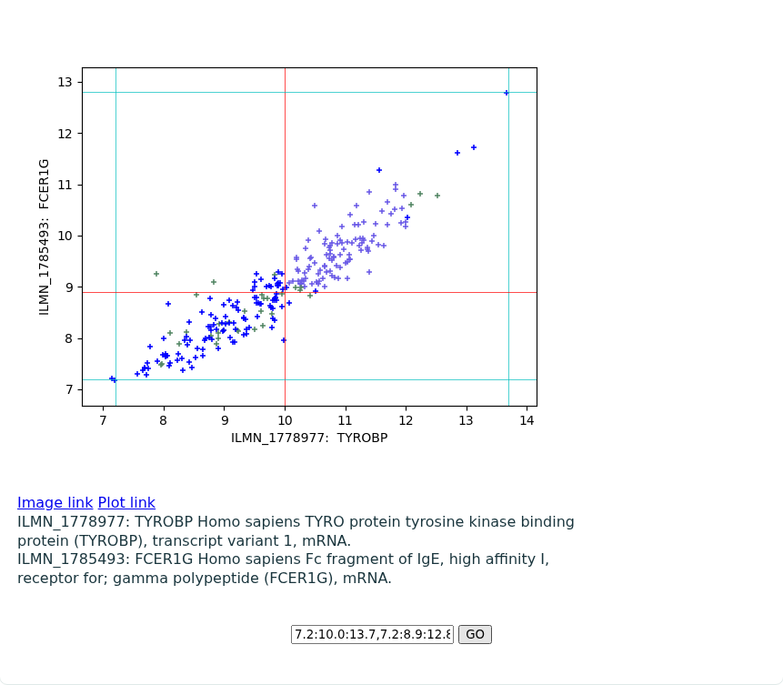
Survival R script · legacy Scr
- Keep only the 102-member Numeric rectangle group checked.
- Click Survival R script. Analysis results displays R source code, not a plotted image.
- Inspect the
surv,status,group,nmandcolorsvectors: this rectangle has 46 eligible survival records, so its other members do not enter the survival calculation. - To see the curve without running R yourself, choose Population analysis & exports → Kaplan–Meier survival → Run analysis.
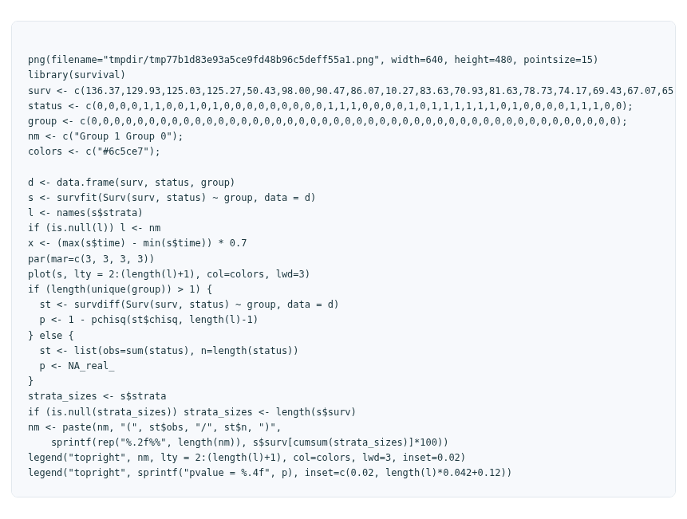
One group means no between-group test. All group values can correctly be zero and p <- NA_real_ is intentional. A single cohort still has a survival curve. For two-cohort comparison rebuild Inv1/Inv2. If you run a copied script outside Hegemon, change its temporary PNG filename to a writable path and close the graphics device with dev.off().
Show samples / Sample images / Probe-pair stats
| Button | Action → expected result |
|---|---|
| Show samples · Show | Check only the 102-member rectangle and click. Samples opens with its 102 unique rows, before further text filtering. For Inv1/Inv2 it shows 165. The tool clears the previous sample text filter. |
| Sample images · ShowIm | Unavailable in this deployment. The optional viewer and image assets are not installed. Processed expression and clinical files alone do not supply sample photographs. |
| Probe-pair stats · Stats | Click with the rectangle checked. Threshold, Boolean, correlation and fit tables still use the full dataset, not only that rectangle. Use Group summaries for selected-cohort expression summaries. |
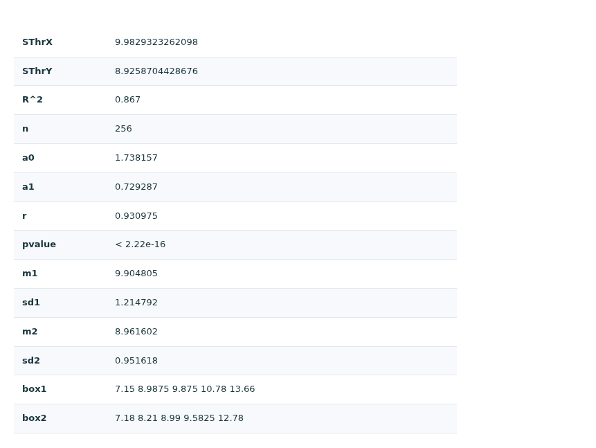
Group correlation · Corr
- Reset view and rebuild Inv1 = 103 and Inv2 = 62. Check only those groups; clear the clinical field.
- Click Group correlation. It compares other probes with the loaded Gene A and Gene B across the 165-member checked union. With no groups checked it uses the full dataset.
- The small result scatter plots correlation to X against correlation to Y. Its points are probes, not patients.
- Type
TYROBPin the result’s search field and click GO to display a matching table row. You can also draw a rectangle on this small plot to list probes in that coefficient region. The table shows ID, corrX, corrY, n1/n2 and Name. - Numeric result links preview a different pairing in the legacy result area. Confirm the IDs you want and load them explicitly with the main gene controls/Explore expression before running population analyses.
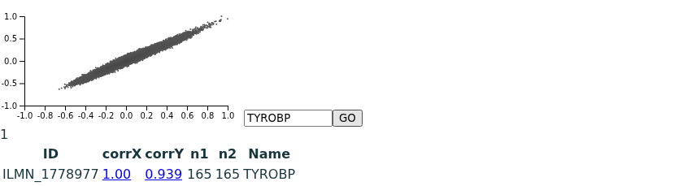
Differential expression · Diff
- Keep only disjoint Inv1 and Inv2 checked in that order.
- Click Differential expression. It compares expression for the first two checked populations.
- Inspect the probe-result scatter and its table. Search
TYROBP, then click GO, or draw a rectangle to select a result region. Columns include Diff, −log10(p), usable group counts and annotation. - A larger −log10(p) corresponds to a smaller raw comparison p-value; it is not an automatically multiple-testing-adjusted discovery. Inspect group order and the underlying means before interpreting difference direction.
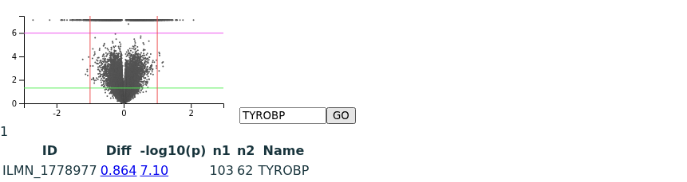
For the comparison exercises use disjoint Inv1/Inv2, not overlapping G1/G2 or a group plus its own union. These are exploratory comparisons; confounding, sample independence and multiple testing need separate scientific assessment.
Search / export samples · Search
- Reset groups, then open Search / export samples.
- Enter
GSM340537 GSM340538 GSM340539and click Search Group. Expect a saved 3-member group. - Check that group on the right if initially unchecked. Use Show samples or Scatterplot to inspect it.
- For a partial match, enter lowercase
search GSM34053and Search Group. This matches sample-ID fragments; read the returned count rather than assuming three. - For threshold populations, enter capitalized
Booleanand Search Group. This creates four quadrant groups plus four low/high marginal groups. They overlap: uncheck unwanted ones before any comparison. - For an expression/clinical CSV, check the wanted groups, leave the search field empty and click Search Group. This exports their union with A/B expression and selected patient information; it does not create another search group. If the browser blocks the new tab/download, allow this action for your local site.
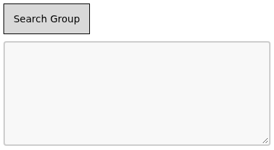
Population analysis & exports
Analyze your populations runs server-side analysis of the checked saved groups. A visual zoom, a typed but unsubmitted gene or an unsaved patient highlight is not its population.
- Restore the Kim default pair: TYROBP X / FCER1G Y.
- Reset groups and rebuild Inv1 = c invasiveness 1 (103), Inv2 = c invasiveness 2 (62), or import the supplied group CSV.
- Check only these two; clear the clinical field. Expand Population analysis & exports.
- Choose an Analysis and click Run analysis. Wait for its image before downloading. Changing the dropdown alone does not generate a new figure.
Gene B · violin plot
- Choose Gene B · violin plot and Run analysis.
- Expect two labeled FCER1G distributions, one for each checked cohort. Width indicates the estimated distribution density; observations and summary marks show the measured values.
- Click Download analysis PNG to keep this figure before running another analysis.
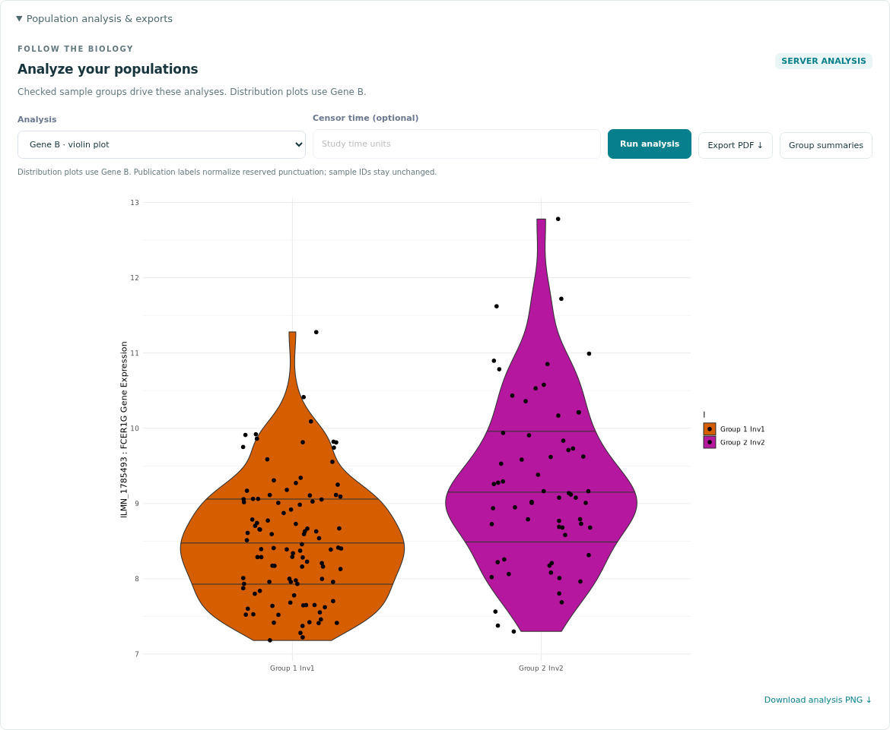
Gene B · box plot
- Choose Gene B · box plot, then Run analysis.
- Compare FCER1G’s median line, quartiles, whiskers and outlying observations across Inv1/Inv2. The figure replaces the previous result.
- Download its PNG separately if you want both plot types.
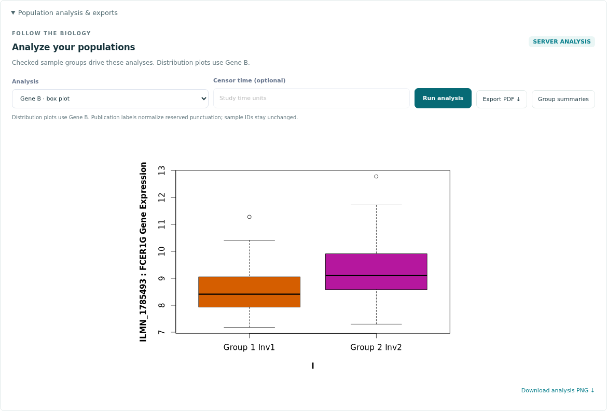
Why only Gene B? How do I plot Gene A?
The four choices preserve the legacy distribution/survival/scatter workflow; the standalone distribution call takes Gene B. Group summaries and the PDF report include both genes. To get a TYROBP violin/box plot: change A to FCER1G and B to TYROBP, Find probes and Explore expression, then run the distribution again. Within the same B2.1 study, saved sample-ID groups remain intact. Do not use Clear or Reset view for this swap; those remove groups.
Kaplan–Meier survival
- Choose Kaplan–Meier survival; leave Censor time empty. Click Run analysis.
- Expect two overall-survival curves for Inv1/Inv2. Together they contribute 165 eligible observations: 69 events and 96 censored records.
- Read the legend and the between-group log-rank comparison. The vertical axis estimates survival probability; follow-up time uses the dataset’s units, months for this Kim setup.
- Enter
60in Censor time and run again. Follow-up beyond 60 months is administratively censored at 60; group membership remains 103/62.60,120additionally requests a display maximum of 120. Clear the field to return to the uncensored-by-CT analysis.
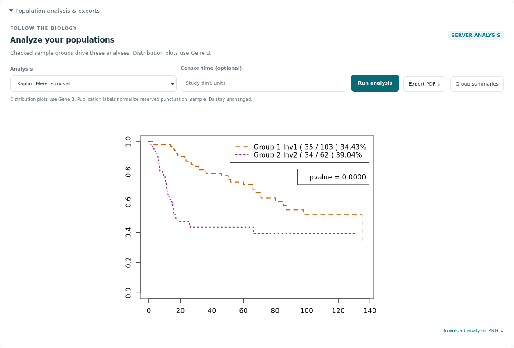
Script versus curve: Survival R script exposes the R instructions used for this calculation; Kaplan–Meier → Run analysis executes that workflow and displays an image. Matching groups and CT should give the same underlying analysis. A single checked group has a curve but no two-group p-value. Samples without eligible time/status are omitted.
Normalized survival status = 1 denotes an event and status = 0 censoring. A censored record is not an event; its follow-up ends without an observed event at that time. Do not substitute the raw c overall survival clinical codes (1/2) for the normalized 0/1 status.
Expression scatter · PNG
- With Inv1/Inv2 checked, choose Expression scatter · PNG and Run analysis.
- Expect a server-rendered scatter for the loaded gene pair with group colors. It uses the expression range, not the browser’s current zoom rectangle.
- Click Download analysis PNG. For a saved copy of the exact interactive zoom/highlight view, use the main chart’s Download SVG instead.
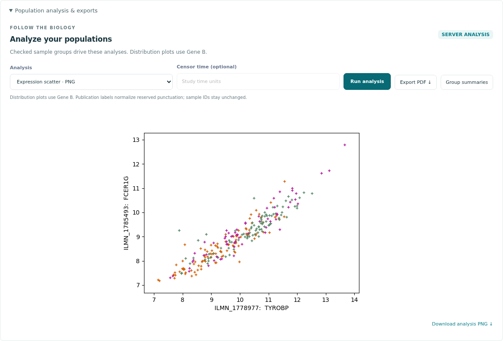
Group summaries
- Keep Inv1/Inv2 checked and click Group summaries; the analysis dropdown choice does not determine this table.
- Inspect group size and A mean, A median, B mean and B median. For the default pair, Inv1 has A mean ≈ 9.326 and B mean ≈ 8.509; Inv2 has A mean ≈ 10.19 and B mean ≈ 9.257.
- Use this to check membership and both genes before interpreting a figure. It is a descriptive summary, not the full Boolean statistics table.
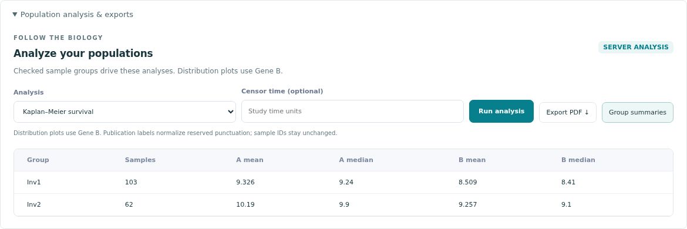
Export PDF
- Keep the intended pair/groups checked; clear Censor time unless you intentionally want a cutoff.
- Click Export PDF and wait for the report download. PDF generation can take longer than an interactive plot.
- Inspect the report’s probe labels, cohort labels and counts, expression/threshold information, distributions for both genes and survival material where supported. This is a generated multi-part report, not a screenshot or a PDF version of only the currently displayed PNG.
- Save the groups CSV and analysis URL alongside the PDF so you can reconstruct the populations. Re-run/export after changing the setup; an old download does not update itself.
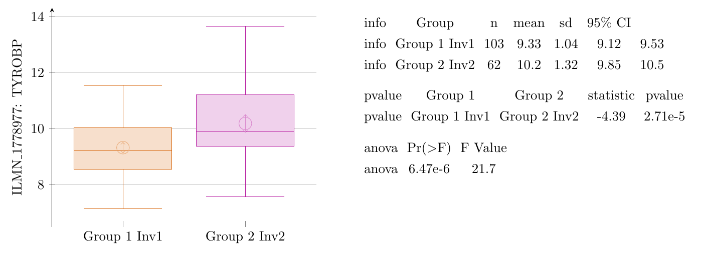
Which download do I need?
| Control | What you keep | What it does not preserve |
|---|---|---|
| Copy analysis link | Dataset/category and gene or probe inputs. | Groups, clinical highlights, zoom; it does not auto-plot. |
| Export checked groups CSV | Named sample-ID memberships and colors, dataset context and loaded expression values. Importable into the same study. | Full expression dataset, current browser state or an entire analysis session. |
| Export selected union CSV | Unique sample rows for the checked groups’ union; all samples if none are checked. | Separate overlapping group memberships. Use the group CSV for restoration. |
| Search Group with empty search | Legacy union export, A/B expression and selected clinical information. | A new dataset or a gene scan. |
| Download SVG | Current main interactive scatter view and point styling. | Raw data for every gene, or a restorable group session. |
| Server PNG | Default full-range pair image. | Later brushed groups and browser zoom. |
| Download figure | A scientific result-card figure, in the chosen PNG/JPG/PDF/SVG format. | The complete population report. |
| Download analysis PNG | The latest generated population figure. | Earlier figures replaced by the next run. |
| Export PDF | A multi-part scientific population report. | An editable website session or this instruction manual. |
| Print / Save PDF in this guide | This manual with its steps and screenshots. | A fresh analysis of your current live groups. |
Recommended saved bundle: analysis URL + group CSV + desired PNG/SVG + population report PDF. Record the dataset ID, exact probes, endpoint, units, SThr/PThr and any CT cutoff.
The example CSV/report downloads are supplied in the HTML edition. If you are reading this manual as a PDF, open HEGEMON_USER_MANUAL.html to download those example files; they are not PDF attachments.
The separate Stats calculator
The header’s Stats page works on List A and List B that you paste. It does not automatically import Kim’s active genes or groups. Open it in another browser tab if you want to preserve the workspace.
| Button | Try this | Expected result |
|---|---|---|
| StepMiner | List A: 1 2 3 8 9 10; List B: 2 3 4 9 10 11. Click StepMiner. | A/B numerical summaries including count, min, mean (SD), threshold, max and box values. |
| histogram | Keep those numeric lists and click histogram. Leave Parameters empty, or use breaks=5. | A distribution histogram and bin/count information for each list. Parameters controls histogram breaks, not cohort membership. |
| intersect | A: GSM340537 GSM340538; B: GSM340538 GSM340539. | Only GSM340538. |
| union | Use the same two ID lists. | GSM340537, GSM340538, GSM340539, once each. |
| Diff-A-B | Use the same ID lists. | Only GSM340537. |
| Diff-B-A | Use the same ID lists. | Only GSM340539. |
| BooleanNet | Paste four observed quadrant counts, for example 2 38 23 13, in List A; leave B empty. | Observed, expected, sparse-score and error-score vectors for those counts. It is not a gene-symbol lookup. Counts are ordered low/low, low/high, high/low, high/high. |
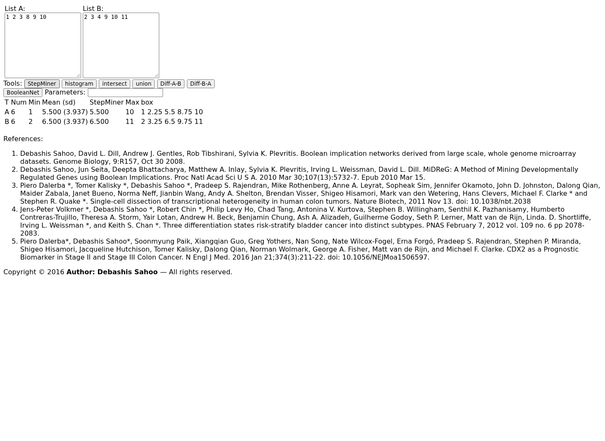
Read the labels with confidence
- Dataset / study / registry ID
- A configured collection of processed measurements and metadata. B2.1 is Hegemon’s ID; GSE13507 is the source GEO accession. A category groups studies, not samples.
- Sample / population / cohort
- A sample is a measurement column/record. A cohort is a set of sample IDs. Samples are not automatically unique patients; check the original study design for replicates and tissue types.
- Gene versus probe
- A gene symbol names a biological gene; a probe ID names a measured feature on the platform. One gene can map to several probes with different annotations.
- Expression / dynamic range / standard deviation
- Expression is the supplied processed measurement. Dynamic range describes its spread; standard deviation summarizes variability around the mean. Values and thresholds are dataset-specific.
- Paired samples / missing values
- Paired samples have finite measurements on both axes. Missing values cannot form scatter points. A group’s membership count can exceed the count usable by a particular analysis.
- StepMiner threshold / low / high
- A data-derived split between lower and higher expression. Boolean scoring uses an uncertainty band around the split; low/high is relative to this dataset’s threshold.
- Boolean implication
- A pattern characterized by one or more unexpectedly sparse low/high expression quadrants. “A low ⇒ B high” does not mean that lowering A experimentally will raise B.
- Pearson r
- Linear co-variation, from −1 to +1. It does not establish causation and can be affected by outliers or population mixtures.
- Union / intersection / difference
- Any checked-group member / members shared by all checked groups / membership in one group but not the other groups.
- Clinical field prefixes c / n
- Legacy categorical / numeric field labels. A code is not self-explanatory; use study metadata to interpret it. Missing values are not a biological category unless explicitly documented that way.
- Event / censored / eligible survival record
- An event is the configured outcome; censoring ends observed follow-up without that event at that time. Eligibility requires a usable time and normalized status, independently of having expression data.
- Kaplan–Meier / log-rank / CT
- Survival-curve estimator / comparison across survival groups / optional administrative censor cutoff. One cohort has no between-group comparison; outcome definitions and time units come from the selected study.
- P-value versus PThr
- A statistical p-value describes a test under its assumptions; it is not the probability that a biological claim is true. The Boolean PThr control instead bounds the legacy error/sparsity score.
- SVG / PNG / PDF / CSV
- Vector figure / raster image / printable document or scientific report / tabular text. An image is not a restorable group-membership file.
Checkpoints and troubleshooting
| Step | Expected Kim result |
|---|---|
| Select B2.1 only | Metadata/source shown; no auto-generated scatter. |
| Default pair → Explore expression | ILMN_1778977 X / ILMN_1785493 Y; 256 paired, 165 blue, 91 green; r ≈ 0.931. |
| Sample rows GSM340537 + GSM340538 | 2-member saved group. |
| c invasiveness 1 / 2 | Inv1 103 / Inv2 62; disjoint union 165. |
| n AGE, range 60:70 | 67 members. |
| G1 invasiveness 1; G2 Grade 1 | Union 122; Intersection 86; D-AB 17; D-BA 19. |
| Numeric rectangle 10:12,9:11 | 102 members; 46 eligible survival observations. |
| Inv1/Inv2 export → reset → import | Names, colors and membership counts 103/62 restored. |
| Inv1/Inv2 population analysis | Two Gene B distributions, two survival curves, group-colored PNG, both-gene summary rows and a downloadable PDF. |
If something looks different
| Symptom | Check / next action |
|---|---|
| No plot after choosing a dataset | Expected. Resolve the intended probes, then click Explore expression. |
| Default genes do not resolve in another study | Use study-appropriate symbols/IDs; species/platform differences can make TYROBP/FCER1G absent. |
| Clinical highlight is not in a report | Save highlighted group and check its row. Merely coloring the plot is not creating an analysis cohort. |
| New Numeric rectangle/Search group has no effect | Check its group checkbox. Legacy-created groups may start unchecked. |
| Wrong set-operation count | Uncheck all derived groups; leave only G1/G2 checked. Confirm first/last group order and the correct clinical codes. |
| Population plot uses the wrong gene | Check the loaded plot title/probe IDs. Click Explore expression after changing gene text; standalone distributions use Gene B. |
| R script appears instead of a survival curve | That is Survival R script’s purpose. Use Kaplan–Meier survival → Run analysis for the image. |
| Survival counts are smaller / p is NA | Some members lack eligible outcomes; NA is expected for a single group. Another dataset may have no survival-capable endpoint. |
| Results still look like legacy controls | Some All group tools and the separate Stats calculator retain legacy diagnostics. MiDReG/Correlation cards and the main scatter are the redesigned interactive surfaces. |
| Sample images is disabled | The optional viewer/data is not installed; no expression setting can enable it. |
| Browser link or download seems inactive | Check clipboard/download/pop-up permissions for the local site. Keep the compute allocation, container and SSH tunnel active for live analyses. |
| Groups vanished | Clear, Reset view, refresh, navigation or a dataset switch can discard them. Select the same study and restore the saved groups CSV. |
Validation and scope
This guide follows the updated application’s actual controls and Kim processed files, not an assumed redesign. Screenshots and downloadable examples were captured from the isolated CPU runtime. The reproducible steps were browser-checked for this edition; availability elsewhere depends on the registered files and scientific runtime. Sample-image viewing is explicitly not supported here.
Primary local references: the workspace and scientific-result frontend, api.php, assets/js/Groups.js?v=f42fb423cdb3, util.php, the legacy Hegemon handlers, the generated local registry and the processed Kim expression/clinical files. The source accession opens GSE13507 at NCBI GEO. The workspace’s References section lists the Hegemon/Boolean implication/MiDReG publications.
For maintainers: the editable website manual is Hegemon_Updated/manual.html; its images and downloadable examples are under assets/images/manual/ and assets/manual/. The root portable HTML/PDF are generated artifacts. Capture and validation details are retained in hegemon-updated-local/logs/manual-capture/.